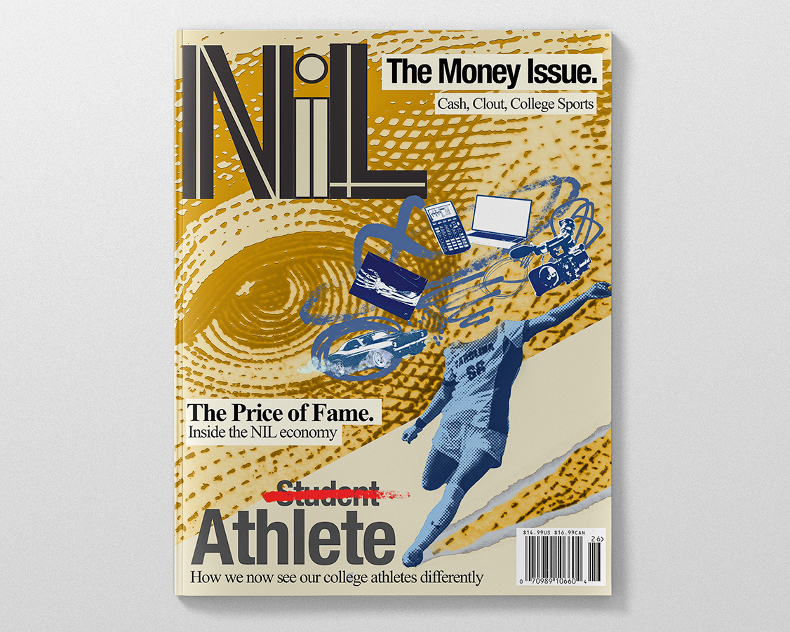

Case study
Name, Image & Likeness


Purpose
Write three to five sentences explaining the project, the audience, the ask, and why it mattered. Keep it plain. A hiring manager should understand the assignment without needing extra context.
Process
Explain the problem you were solving. Avoid making the project sound bigger than it was. A specific constraint is better than vague ambition.
- What needed to change?
- Who was it for?
- What constraints shaped the work?
Problems
Show how you thought. Include research, sketches, moodboards, copy territories, visual routes, feedback, or team collaboration. This is where broad creative range becomes credible.
Payoff
Share what shipped, what you learned, and any results. Results can be quantitative, qualitative, or process-based: approvals, engagement, adoption, clearer positioning, stronger visual consistency, or a better team workflow.